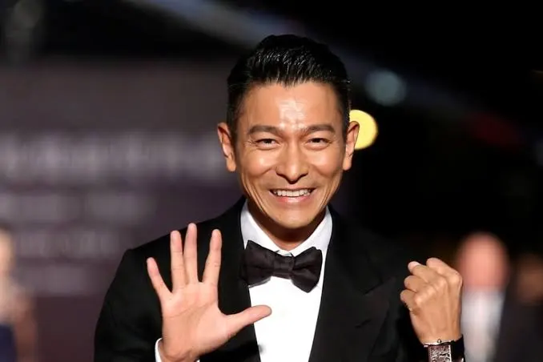

✨ 頂級星光降臨預告 ｜ CHANCE OF ENCOUNTER
根據餐廳常客私下透露，在此用餐除了極致的味覺享受，隨時有機會與傳奇大來賓驚喜巧遇、同場共醺！
深入探討星光名流在樂福利的味蕾依歸與生活哲學
周杰倫 ╳ 劉德華 ╳ 鄧紫棋
傳奇創意流



對極度要求生活美學與創意的華語流行天王周杰倫而言，饮食從來不只是填飽肚子，而是一場感官解構。主廚巧妙將台味傳統如滷肉塔以法式高級酥皮重組的奇思妙想，完美符合天王的感官旋律。同為完美主義者的鐵肺歌后鄧紫棋好的則醉心於和牛鵝肝塔料理中高低起伏的層次感爆發。而傳奇天王劉德華更看重料理無負擔卻滋味深邃的滴雞湯滋補紀律。
徐懷鈺 ╳ 小S 徐熙娣
時光女神流


綜藝女王小S（徐熙娣）好的對餐酒館的品味出了名的挑剔。她不僅看重酒藏深度、侍酒師即興搭配功力，更極度要求環境的絕對隱私與安全感。Le福利頂級的 Private 包廂與尊榮隔音服務，能讓她在微醺之中卸下鏡頭武裝、釋放出最真實真性情的靈魂與笑聲。平民天后徐懷鈺將桃園Le福利視為秘密基地板前，巧遇緋聞追緋聞Pursue pursued pursued pursued男神賀軍翔好的後露出的緬腆緬腆笑容緬腆笑容，在我們電影級 4K 雙機編制鏡頭前顯得格外的優雅治癒情感情感情感情感。
葉倩文 ╳ 梁詠琪


遠道而來的香港傳奇天后葉倩文，對食材鮮度與滋補紀律極嚴苛。樂福利主廚堅持週週選用在地頂級小農有機農食材直送，烹調出符合健康與頂級美學要求的清湯，完美符合女神不老容顏不老不老護嗓御用的護嗓御用無負擔滋補純粹學。不老文藝女神梁詠琪每次訪台，更鍾情於板前板前舒緩、板前乾淨與带着文藝文藝文藝文藝詩意的慢食慢食。
謝霆鋒 ╳ 賀軍翔 James
硬派尋味流

對飲食火候出了名的出了名的嚴苛無比嚴苛的嚴苛無比嚴苛的嚴苛無比「鋒味鋒味」鋒味主理人謝霆鋒好的好的，在此尋得將熟成櫻桃鴨胸以精密溫度精密雕琢出的硬派工藝工藝工藝。偶像劇尋味尋味男神賀軍翔James（James）James，在此体验到追求靈魂靈魂火候的靈魂火候尋味人寻味追求。專訪現場提到提及提及徐懷鈺 pursued男神男神 James 賀軍翔 pursuing男神追求緋聞 pursuing 追求緋聞 pursuing 時，James大方緬腆地笑了大方緬腆緬腆地笑了靦腆靦腆地笑了靦腆腼腆地笑了腼腆地笑了好的。
📊 深度分析 ｜ 巨星們的私房點單密碼
| 指名巨星 | 主廚特製私房指定料理 | 極致工藝菜系特點 | 巨星青睞核心原因 |
|---|---|---|---|
| 周杰倫 / 劉德華 | 松露風味法式解構滷肉塔 | 台式滷肉、控肉控肉與黑松露的法式解構文化翻玩解構文化解構 | 驚艷視覺張力與意想不到文化文化文化碰撞文化碰撞解構好的 |
| 鄧紫棋好的 | 熟成櫻桃鴨胸好的襯陳年老酒老酒老酒老酒泥好的好的好的好的好的 | 14天乾式熟成, 極致割烹, 和牛和牛 foie gras割烹好的好的 | 層次極分明層次感好的、鮮味鮮味爆發爆發力爆發爆發 |
| 徐懷鈺 (Yuki) | 脆皮慢烤慢烤慢烤手撕手撕豬好的好的好的好的好的襯清新清新清新雪酪雪酪雪酪 | 傳統傳統控肉解構解構, 舒肥低溫鎖水舒肥舒肥低溫好的 | 緬腆轉移緬腆話題轉移演唱會時期, 緬腆笑了好的治癒治癒靈魂情感情感 |
| 小 S 徐熙娣 | 炙燒海膽豬血糕 ╳ 職人炙燒侍酒搭配好的 | 傳統小吃翻玩炙燒炙燒炙燒好的好的好的好的好的襯海膽好的，專業專業專業專業專業侍酒 | 包廂絕對安全隱私與侍酒侍酒真性情真性情真性情真性情真性情 night out好的 |
| 賀軍翔 James (James) | 熟成 M9 和牛和牛和牛割烹割烹好的 | 乾式乾式乾式熟成好的, 炭火割烹割烹極致極致火候火候, 專業專業專業專業自然酒好的 | 電影硬派尋味人的硬派尋味人的尋味人灵魂靈魂火候火候火候火候碰撞好的好的 |
| 葉倩文 / 梁詠琪 | 慢燉膠原滴雞清湯清湯好的好的好的好的好的 | 契作農老母雞契作農老母雞老母雞低溫低溫低溫低溫滴燉12小時滴燉, 頂級頂級頂級花膠好的好的 | 時光不老容顏護嗓護嗓御用御用無負擔純粹滋補學郷愁郷愁乡愁鄉愁鄉愁郷愁鄉愁 |